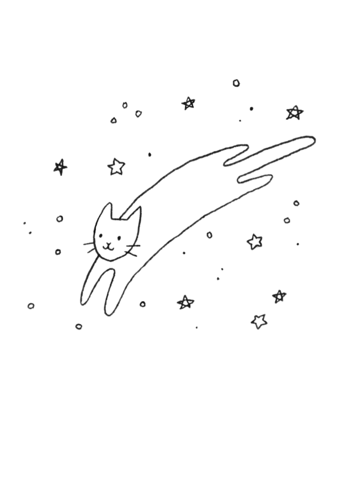

Dustin's Gallery
A space where my stories unfold and journeys come alive.

Hi, I'm Dustin
AI Engineer · Cat enthusiast · Photographer · Home cook
I teach computers to see things. Lately, that means fish (more on that in my journey). When I'm not training models, I'm behind a camera, in front of a stove, or trying to befriend every cat in a 5 km radius. The cameras cooperate. The cats, rarely.
Where I live
Coordinates of the human who feeds this website.
Da Nang, Vietnam
Beaches, mountains, and a bridge shaped like a dragon that literally breathes fire on weekend nights. Yes, really. It's the most dramatic commute in the country.
Originally from Quang Binh, the land of giant caves, so exploring dark places comes naturally. These days it's mostly the fridge at midnight.
- Home base
- Da Nang
- Hometown
- Quang Binh
- Timezone
- GMT+7 (replies may be delayed by cat naps)